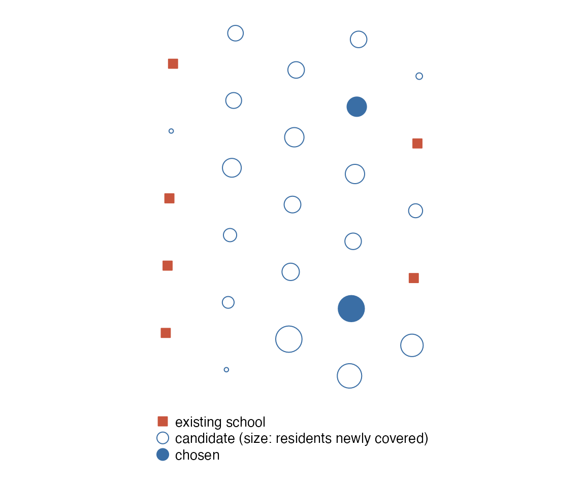

Travel times say how well a place is served today.
locate_facilities() turns the question around: given the
people to serve and the places where a facility could open, where
should the next ones go? floating_catchment() measures
the other side of access, supply against the demand that competes for
it. Both work on the travel times of the network, by any mode, and both
are peabiru’s own functions.
The four models
locate_facilities() takes the demand points (with a
weight each: residents, pupils, patients), the candidate sites and,
optionally, the facilities that already exist, and solves one of four
classic models:
model |
question | objective |
|---|---|---|
"max_cover" |
with n_facilities new facilities, how many people can
be within cutoff minutes of one? |
demand covered (to maximise) |
"set_cover" |
how few facilities put everyone within cutoff
minutes? |
number of new sites |
"p_median" |
where do n_facilities facilities make the average trip
shortest? |
demand-weighted minutes to the nearest facility |
"p_center" |
where do they make the worst trip shortest? | minutes of the demand point farthest from its nearest facility |
A demand point is covered by a site at most
cutoff minutes away (the cutoff included). The
existing facilities count first: only the demand they leave
uncovered, or the travel time they leave, drives the choice of the new
sites, and they are never closed or moved.
A worked example: two new schools
The sample network has 27 points with their population; six of them have a school. Where would two more schools put the most residents within a 12-minute walk of one?
schools <- points[points$schools > 0, ]
others <- points[points$schools == 0, ]
found <- locate_facilities(
network, points, others, existing = schools,
model = "max_cover", n_facilities = 2, cutoff = 12,
demand_colname = "population", mode = "WALK", n_threads = 2
)
found$sites
#> # A tibble: 2 × 6
#> id lon lat order marginal cumulative
#> <chr> <dbl> <dbl> <int> <dbl> <dbl>
#> 1 89a8100c03bffff -46.6 -23.6 1 5658 43534
#> 2 89a8100c383ffff -46.6 -23.5 2 2683 46217The result is a list of three tables and a summary.
sites lists the new sites by what each adds:
marginal is the demand it newly covers and
cumulative the demand covered so far, existing schools
included. The summary has the totals:
s <- found$summary
round(100 * c(today = s$covered_before, greedy = s$objective_greedy,
solution = s$covered) / s$total_demand, 1)
#> today greedy solution
#> 81.9 99.5 99.9
s$n_swaps
#> [1] 1candidates has one row per candidate with its
potential: the residents not covered today that a school
there would cover alone. It is the map to draw before choosing
anything, since it shows every good place and not only the winners.
head(found$candidates[order(-found$candidates$potential),
c("id", "potential", "chosen")], 4)
#> # A tibble: 4 × 3
#> id potential chosen
#> <chr> <dbl> <lgl>
#> 1 89a8100c033ffff 5764 FALSE
#> 2 89a8100c03bffff 5658 TRUE
#> 3 89a8100c007ffff 4829 FALSE
#> 4 89a8100c00fffff 3936 FALSEThe candidate with the largest potential is not in the solution: the two sites chosen overlap less with each other than it does with either. That is the difference between ranking sites one by one and choosing a set.

demand has one row per demand point: its weight, the
nearest open facility (existing or new), the minutes to it and whether
it is covered.
head(found$demand[c("id", "demand", "facility_id", "travel_time", "covered")], 4)
#> # A tibble: 4 × 5
#> id demand facility_id travel_time covered
#> <chr> <dbl> <chr> <dbl> <lgl>
#> 1 89a8100c00fffff 3648 89a8100c03bffff 8 TRUE
#> 2 89a8100c007ffff 3936 89a8100c03bffff 9 TRUE
#> 3 89a8100c077ffff 6514 89a8100c077ffff 0 TRUE
#> 4 89a8100c03bffff 3670 89a8100c03bffff 0 TRUEHow the models are solved
By heuristics, with no integer programming solver:
-
Greedy construction. Sites are opened one at a
time, each the one that improves the objective most given the ones
already open. For maximal covering this covers at least 63% (1 - 1/e) of
the most that any choice of
n_facilitiessites could cover of the demand not covered today (Nemhauser, Wolsey and Fisher, 1978); in practice it is usually much closer. -
Vertex substitution (
swap = TRUE, the default; Teitz and Bart, 1968). An open new site is swapped for a closed candidate while that improves the objective, taking the best swap of all at each step. The result is never worse than the greedy one, andsummaryreports both (objective_greedy,objective,n_swaps).
In the example the greedy pair covers 46,040 residents and one swap takes it to 46,217, which is the optimum here, as an exhaustive search over the 210 pairs of candidates shows:
ttm <- travel_time_matrix(network, points, rbind(schools, others), mode = "WALK",
max_trip_duration = 12, n_threads = 2)
covered <- function(new) {
near <- unique(ttm$from_id[ttm$to_id %in% c(schools$id, new)])
sum(points$population[points$id %in% near])
}
max(apply(combn(others$id, 2), 2, covered))
#> [1] 46217That is not guaranteed in general: the solutions are good and reproducible, not proven optimal.
Details by model:
-
"set_cover"opens the site that covers the most demand points not yet covered until every point some site can cover is covered, then drops the sites the others make redundant. -
"p_center"compares the largest travel time and, on ties, the demand-weighted sum, in the greedy step and in the swaps. - In
"set_cover"and"p_center"a point with weight 0 is not demand, and the others count the same whatever their weight. - In
"p_median"and"p_center", a demand point that reaches no open facility withinmax_trip_durationis chargedunreachable_timeminutes (by default twice the longest travel time of the table), so that serving a point always beats shortening the trip of another. A point that no site at all can serve is left out of the objective and reported insummary$unservable_demand. - Ties go to the candidate listed first, and the result does not
depend on
n_threads.
The other models
How few schools would put every resident within a 10-minute walk, starting from none?
cover <- locate_facilities(
network, points, points, model = "set_cover", cutoff = 10,
demand_colname = "population", mode = "WALK", n_threads = 2
)
nrow(cover$sites)
#> [1] 7
cover$summary$unservable_demand
#> [1] 0Two sites that make the average walk shortest, and two that make the longest walk shortest:
compare <- lapply(c(p_median = "p_median", p_center = "p_center"), function(model) {
r <- locate_facilities(
network, points, points, model = model, n_facilities = 2,
demand_colname = "population", mode = "WALK", max_trip_duration = 60,
n_threads = 2
)
c(mean = weighted.mean(r$demand$travel_time, r$demand$demand),
longest = max(r$demand$travel_time))
})
round(do.call(rbind, compare), 1)
#> mean longest
#> p_median 9.7 32
#> p_center 13.3 19The p-median pair gives the shorter average and the p-center pair the shorter worst case: the two models answer different questions.
Any mode works, since the travel times come from
travel_time_matrix(): pass mode,
departure_datetime and any other routing argument.
transit <- locate_facilities(
network, points, points, model = "p_median", n_facilities = 3,
demand_colname = "population", mode = c("WALK", "TRANSIT"),
departure_datetime = departure, seed = 1, max_trip_duration = 60,
n_threads = 2
)
transit$sites$id
#> [1] "89a8100c03bffff" "89a8100c1dbffff" "89a8100c15bffff"Supply against demand: the floating catchment area
Being near a school is not the same as having a place in it.
floating_catchment() computes the two-step floating
catchment area (Luo and Wang, 2003):
- each facility’s supply is divided by the demand within its catchment;
- each demand point adds up the ratios of the facilities within its catchment.
The result is supply per unit of demand at each demand point: here, schools per resident within a 20-minute walk.
fca <- floating_catchment(
network, points, schools, cutoff = 20,
demand_colname = "population", supply_colname = "schools",
mode = "WALK", n_threads = 2
)
fca$supply[c("id", "supply", "catchment_demand", "ratio")]
#> # A tibble: 6 × 4
#> id supply catchment_demand ratio
#> <chr> <dbl> <dbl> <dbl>
#> 1 89a8100c077ffff 1 22033 0.0000454
#> 2 89a8100c1dbffff 2 17501 0.000114
#> 3 89a8100c39bffff 1 10593 0.0000944
#> 4 89a8100c1cbffff 1 21263 0.0000470
#> 5 89a8100c153ffff 1 22664 0.0000441
#> 6 89a8100c14fffff 1 11967 0.0000836
# schools per 10,000 residents
round(range(10000 * fca$demand$accessibility), 2)
#> [1] 0.45 3.34The index shares out the supply: the sum over the demand points of
demand times accessibility is the supply of the facilities
that have any demand in their catchment.
With decay_function = "step" a pair counts in full up to
cutoff minutes and not at all beyond. Any other decay
function gives the enhanced form (Luo and Qi, 2009), in which
nearer pairs weigh more, in both steps. The functions and their
decay_value are those of accessibility() (see
vignette("accessibility")); the weight falls continuously
with travel time, where Luo and Qi used a few travel-time zones.
smooth <- floating_catchment(
network, points, schools, cutoff = 20,
decay_function = "logistic", decay_value = 5,
demand_colname = "population", supply_colname = "schools",
mode = "WALK", n_threads = 2
)
round(range(10000 * smooth$demand$accessibility), 2)
#> [1] 0.69 2.74From a table of travel times
Both functions take a table of travel times instead of a network:
from_id (demand point), to_id (site) and the
minutes in travel_time_pXX or travel_time, as
travel_time_matrix() returns it. A pair that is absent is
unreachable. The points then need only their id, so the
same matrix can serve several models, or travel times from another
source can be used. Here, the matrix computed above:
again <- locate_facilities(
NULL, points[c("id", "population")], others["id"], existing = schools["id"],
model = "max_cover", n_facilities = 2, cutoff = 12,
demand_colname = "population", travel_times = ttm
)
identical(again$sites$id, found$sites$id)
#> [1] TRUEWhat the models do not see
The models choose sites by travel time and demand alone. They do not know the capacity or the cost of a facility, whether land is available at a candidate site, the demand that comes from outside the study area, or how well the people already covered are served. Maximal covering treats 11 minutes and 1 minute alike, and p-median may leave a few people very far to shorten the average: comparing two models on the same data is often more informative than either alone.
References
- Church, R. and ReVelle, C. (1974). The maximal covering location problem. Papers of the Regional Science Association, 32, 101-118. doi:10.1007/BF01942293
- Hakimi, S. L. (1964). Optimum locations of switching centers and the absolute centers and medians of a graph. Operations Research, 12(3), 450-459. doi:10.1287/opre.12.3.450
- Luo, W. and Qi, Y. (2009). An enhanced two-step floating catchment area (E2SFCA) method for measuring spatial accessibility to primary care physicians. Health & Place, 15(4), 1100-1107. doi:10.1016/j.healthplace.2009.06.002
- Luo, W. and Wang, F. (2003). Measures of spatial accessibility to health care in a GIS environment: synthesis and a case study in the Chicago region. Environment and Planning B: Planning and Design, 30(6), 865-884. doi:10.1068/b29120
- Nemhauser, G. L., Wolsey, L. A. and Fisher, M. L. (1978). An analysis of approximations for maximizing submodular set functions - I. Mathematical Programming, 14, 265-294. doi:10.1007/BF01588971
- Teitz, M. B. and Bart, P. (1968). Heuristic methods for estimating the generalized vertex median of a weighted graph. Operations Research, 16(5), 955-961. doi:10.1287/opre.16.5.955
- Toregas, C., Swain, R., ReVelle, C. and Bergman, L. (1971). The location of emergency service facilities. Operations Research, 19(6), 1363-1373. doi:10.1287/opre.19.6.1363